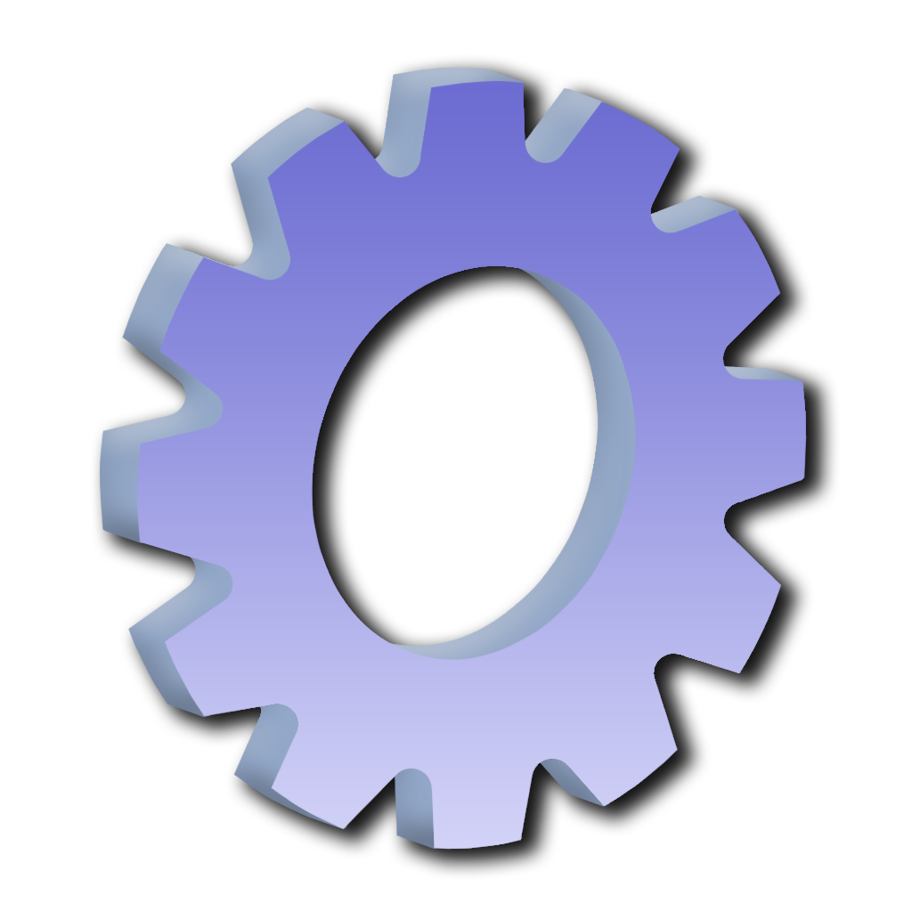

About Me
Projects

Skills
Education & Certs
Experience
CV
Contact
Hi! I’m Lauren Brampton, a third-year Game & Software Development student at TUS Thurles.
I love making & playing games, learning Unreal Engine, and creating 3D assets in Blender.
I have spent 19 years in Ireland (originally from England).
From a young age I have always loved playing video games, my dad was always keeping my brother and I up to date with the newest consoles & games. From the age of 4, my fasination with video games grew & when lockdown hit, bored in my room I found myself learning java to make plugins for minecraft or taking apart old computers to see how they work! Since then I knew I was meant to be in the IT workforce. Now I am my families personal computer tech, debugging issues and even fixing phone screens!
Loading...
Programming: Java, C++, JavaScript, HTML, SQL, R
Game Dev: Unreal Engine, Construct, Unity (basic)
Web & Backend: HTML/CSS, SQL with Java (NetBeans)
Tools: Photoshop, Blender (learning), VirtualBox
Systems: Windows, Linux, PC hardware repair
TUS Thurles
BSc in Game & Software Development
2022–2027
Coursera
Certificate Game Design and Unreal Engine Development
June 2025–Present
Certifications:
- Introduction to Game Design -
View Certificate
Cleaning Operative – An Garda Síochána
01/09/2024 – Current
Performed regular and deep cleaning tasks across high traffic areas, ensuring hygiene and safety compliance. Used cleaning chemicals responsibly, maintaining a clean, secure work environment.
Compliance Auditor – Serve Legal Ireland
01/05/2024 – Current
Did undercover compliance checks for alcohol and tobacco sales. Reported findings accurately and provided recommendations to improve store practices.
Cashier – Barry’s SuperValu, Thurles
02/06/2024 – 28/09/2024
Processed customer transactions, validated payments and managed end-of-day closing tasks including deli cleaning, closing lottery machines, self checkouts and cashing out.
Shop Assistant – O’Keeffe’s SuperValu, Bantry
02/10/2021 – 12/06/2024
Handled tills, lottery, cheque payouts, handled cheques and customer service. Also rotated and stocked items, worked the bakery, and served in the café.
Waitress – Marianne O’Donovan
07/06/2020 – 04/02/2021
Ensured accurate orders, prepped cutlery, cleaned efficiently and supported fast-paced food service flow.
Photographer Assistant – Sharron O’Rourke Photography
16/10/2018
Prepared sets, charged batteries and assisted with family photography sessions, ensuring smooth, enjoyable experiences for clients.
Tidy Towns Volunteer
Contributed to community clean ups to improve the appearance and hygiene of public areas, making local spaces more welcoming to locals and tourists.
Scouts
Participated in outdoor activities and service projects, while developing first aid, leadership and life skills in a team based setting.
Charity Skydiving (2023)
Successfully completed a charity skydive with my mother to raise funds and awareness for charity.
Charity Shop (2019 - 2024)
Worked in a local charity shop, helping put out new stock and managing the checkout.
Email: laurenbrampton2003@gmail.com
LinkedIn: View Profile
Location: Templemore Co.Tipperary/Bantry Co.Cork
Will commute/relocate if needed